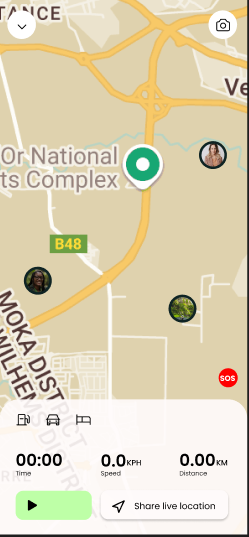

EVERY STEP
HAS A PULSE
Track your miles. Map your memories. Join the elite community of modern explorers.
Track your miles. Map your memories. Join the elite community of modern explorers.
Most apps track your location. Wayfarian tracks your spirit. Whether it's the quiet streets of Kyoto or the raw peaks of the Andes, your movement deserves a canvas, not just a database.
Latency in Legend Creation
Stories Preserved

Every mile is analyzed. Our engine smooths your path into a masterpiece of digital cartography.
Real-time elevation profiles that prepare you for the peak before you even see it.

One journey. Multiple perspectives. Photos from the whole crew sync to one map.

Compete with wayfarians worldwide. Earn badges for the highest peaks and longest roads.
Wayfarian knows the route before you do. Find the essentials without ever leaving the tracking screen.